Guías para el área de Turismo de Santa Rosa de Calamuchita: Alojamientos y
Gastronomía
Documentación del proyecto
Septiembre 2026
Área de Prensa y Comunicación
Resumen Ejecutivo
Este proyecto consiste en dos guías online para el área de turismo de Santa Rosa de
Calamuchita. La Guía de Alojamientos y la Guía de Gastronomía
son herramientas digitales interactivas que permiten al visitante
explorar fácilmente las opciones de hospedaje y comida disponibles en la
región. Ambas guías están basadas en tecnologías modernas (HTML5, CSS3,
JavaScript, Node.js, React, MySQL) y están alojadas en servicios
gratuitos de hosting y base de datos.
2Guías online
+560Alojamientos catalogados
16Locales gastronómicos (demo)
Beneficio principal: Costo $0 para el municipio
Contexto y Motivación
Actualmente, el área de turismo del municipio no cuenta con una página web
completa y funcional. Los contenidos relacionados con el turismo están dispersos en
documentos PDF alojados en un servicio de enlaces (Linktree), lo que
dificulta el acceso y la actualización constante de la información,
especialmente desde dispositivos móviles. Ante la próxima participación
del área en la FIT (feria internacional de turismo) en Buenos Aires, fue
que tomamos la decisión de mejorar la presencia digital del municipio mediante guías
online accesibles, modernas y actualizables.
Es importante aclarar que el desarrollo de este proyecto se realizó
completamente fuera del horario laboral y sin costo alguno para el municipio, por
iniciativa de quienes estamos todos los días en nuestra oficina de Prensa.
La Guía de Alojamientos es una herramienta interactiva que muestra
todos los establecimientos de hospedaje disponibles en Santa Rosa de
Calamuchita. Los usuarios pueden buscar alojamientos por nombre,
dirección o teléfono, filtrar por categoría (hoteles, cabañas,
departamentos, campings, etc.) y acceder directamente al sitio web del
establecimiento o contactarlo vía WhatsApp o teléfono.
alojamientos-src.netlify.app
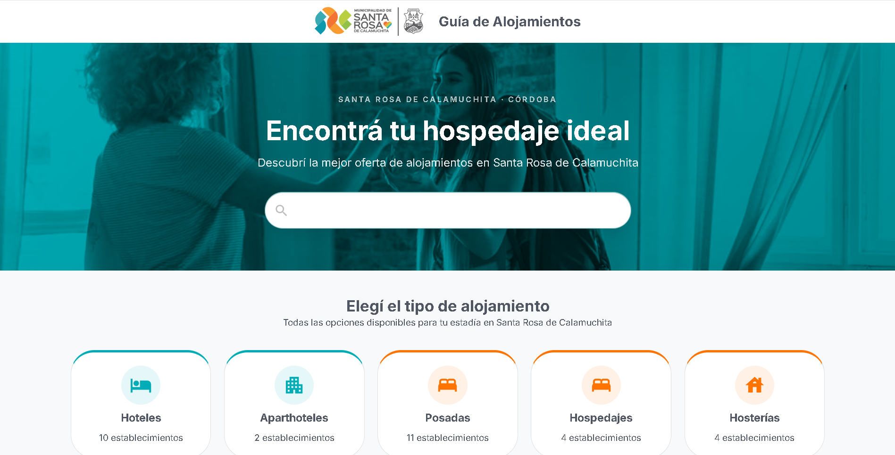
Vista principal de la Guía de Alojamientos en escritorio, con
buscador central y grilla de categorías con contadores dinámicos.
alojamientos-src.netlify.app/categorias
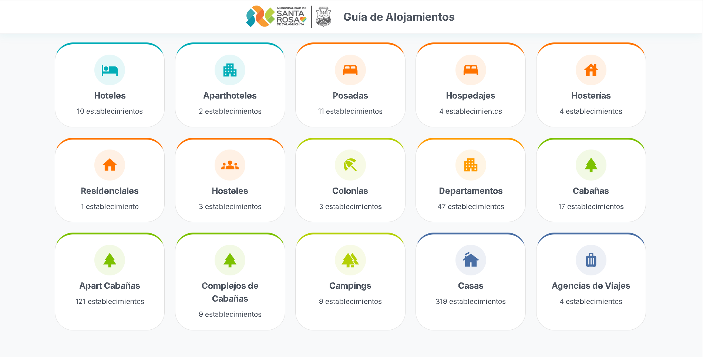
Grilla de categorías de alojamientos en vista escritorio, mostrando
íconos representativos y contadores de establecimientos por
categoría.
La Guía de Gastronomía es una herramienta interactiva que muestra
todos los establecimientos gastronómicos disponibles en Santa Rosa de
Calamuchita. Los usuarios pueden buscar locales por nombre, dirección
o teléfono, filtrar por categoría (restaurantes, pizzerías,
restobares, casas de té, heladerías, rotiserías) y acceder
directamente al sitio web del establecimiento o contactarlo vía
WhatsApp o teléfono.
guia-gastronomia.netlify.app
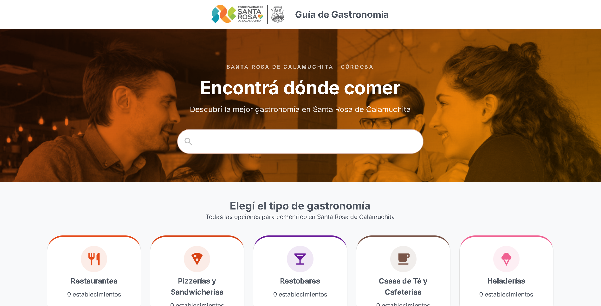
Vista principal de la Guía de Gastronomía en escritorio, con
buscador central y grilla de categorías de establecimientos
gastronómicos.
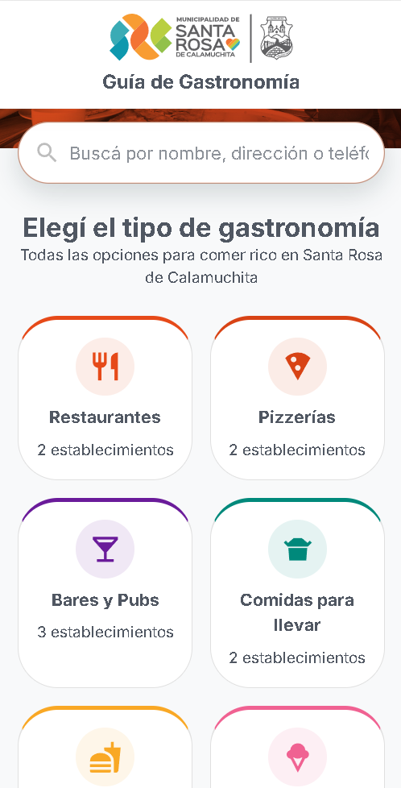
Grilla de categorías de gastronomía en vista mobile, optimizada para
dispositivos táctiles con diseño responsive.
Historia del Desarrollo
1
Fase 1 - Guía de Alojamientos Estática
Desarrollo inicial de la Guía de Alojamientos como una aplicación
web estática utilizando HTML, CSS y JavaScript puro. Los datos
eran leídos desde un archivo JSON local y la aplicación fue
hospedada en Netlify. Esta fase permitió validar la funcionalidad
y el diseño de la guía.
2
Fase 2 - Panel de Administración Completo
Implementación de un panel de administración completo para
gestionar el contenido de las guías. El backend se desarrolló con
Node.js, Express y Sequelize, utilizando una base de datos MySQL
para almacenar los datos. La autenticación se realizó mediante JWT
(JSON Web Tokens). El frontend fue reescrito en React + Vite + MUI
para ofrecer una experiencia de administración más dinámica y
profesional. Los servicios gratuitos Railway (backend) y Clever
Cloud (MySQL) fueron utilizados para el despliegue. Los datos
migraron de JSON a la base de datos.
3
Fase 3 - Guía de Gastronomía Reutilizando Arquitectura
Desarrollo de la Guía de Gastronomía reutilizando toda la
arquitectura existente: el mismo backend, la misma base de datos
(con una nueva tabla) y el mismo frontend parametrizado por
"rubro". Esta aproximación permitió reducir significativamente el
tiempo de desarrollo y garantizar la consistencia entre ambas
guías.
Arquitectura Técnica
Frontend
React en Netlify
→
Backend
Node.js en Railway
→
Base de Datos
MySQL en Clever Cloud
Frontend (React en Netlify): Interfaz de usuario
desarrollada con React, diseñada con Material UI (MUI) y alojada de
forma gratuita en Netlify. Proporciona una experiencia de usuario
moderna y responsive, accesible desde cualquier dispositivo.
Backend (Node.js en Railway): API RESTful
desarrollada con Node.js y Express, alojada en Railway. Maneja la
lógica de negocio, la autenticación (JWT) y la comunicación con la
base de datos. Sequelize se utiliza como ORM para interactuar con la
base de datos.
Base de Datos (MySQL en Clever Cloud): Base de datos
relacional MySQL alojada gratuitamente en Clever Cloud. Almacena toda
la información de los establecimientos (alojamientos y locales
gastronómicos), categorías, usuarios administradores y otros metadatos
del sistema.
Servicios Utilizados (Todos gratuitos)
Netlify: Hosting del frontend
Railway: Hosting del backend
Clever Cloud: Hosting de la base de datos MySQL
GitHub: Control de versiones y gestión del código
Importante: No hay costo inicial ni mensual para el municipio.
Funcionalidades Principales
Para el Público
Búsqueda por nombre, dirección o teléfono
Filtros por categoría con contadores dinámicos
Paginación (12 resultados por página)
Contacto por WhatsApp (con mensaje predefinido) y teléfono
Enlace a sitio web del establecimiento
Diseño responsive (mobile-first)
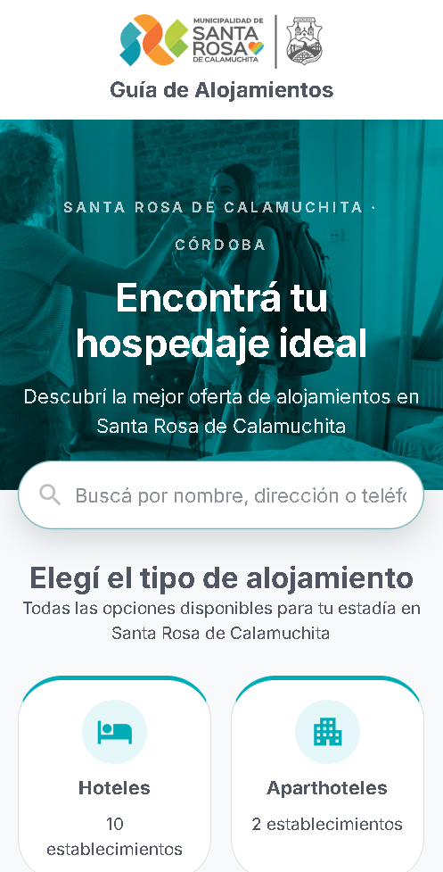
Buscador principal en vista mobile de la Guía de Alojamientos, con
barra de búsqueda optimizada para touch.
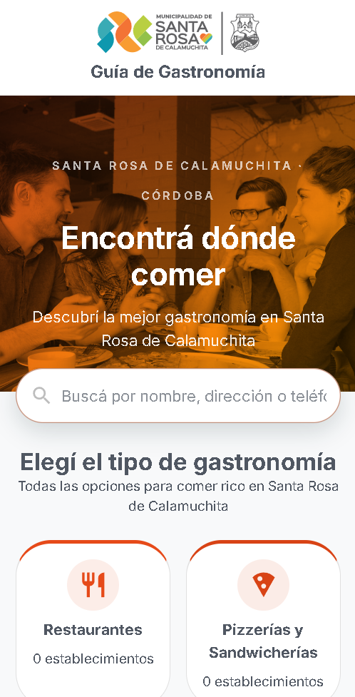
Buscador principal en vista mobile de la Guía de Gastronomía, con
barra de búsqueda optimizada para dispositivos móviles.
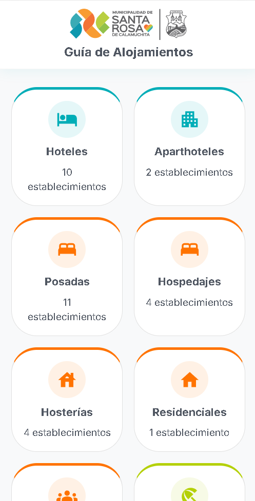
Filtros por categoría en vista mobile, con contadores dinámicos que
actualizan según la selección del usuario.
Listado de establecimientos de la categoría "Apart Cabañas" en vista
escritorio, con paginación de 12 resultados por página.
guia-gastronomia.netlify.app/categoria/cafeterias
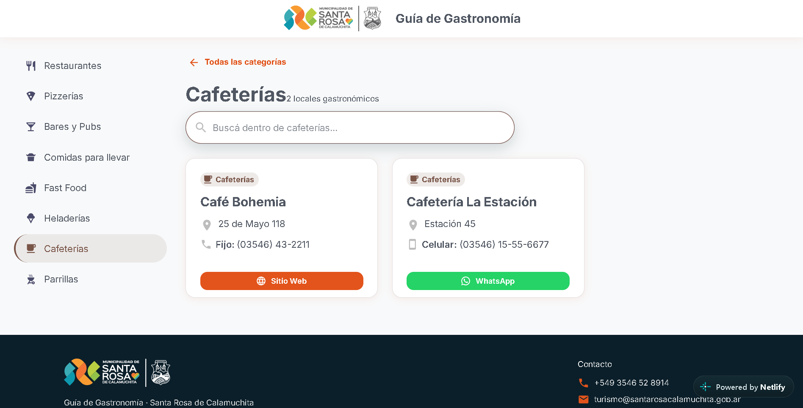
Listado de locales gastronómicos de la categoría "Cafeterías" en
vista escritorio, con paginación y ordenamiento de resultados.
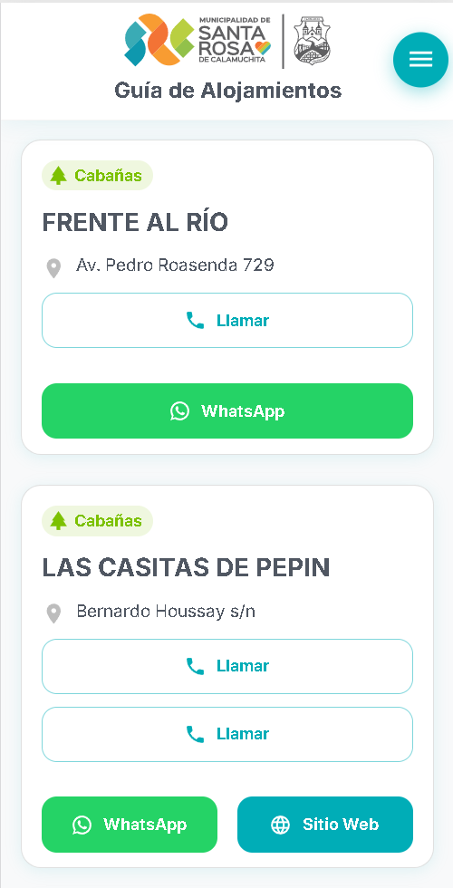
Tarjetas de alojamientos en vista mobile, con botones de contacto
por WhatsApp, llamada telefónica y enlace a sitio web.
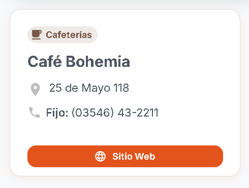
Detalle de tarjeta individual del establecimiento "Café Bohemia" (datos de prueba),
mostrando información completa con botones de contacto y enlace web.
Para la Administración
Login seguro con email y contraseña
CRUD completo: crear, editar, eliminar alojamientos y locales
gastronómicos
Selector de rubro (Alojamientos/Gastronomía)
Autonomía del área de turismo: pueden actualizar los datos sin
depender de un programador
admin-panel.alojamientos-src.netlify.app/login
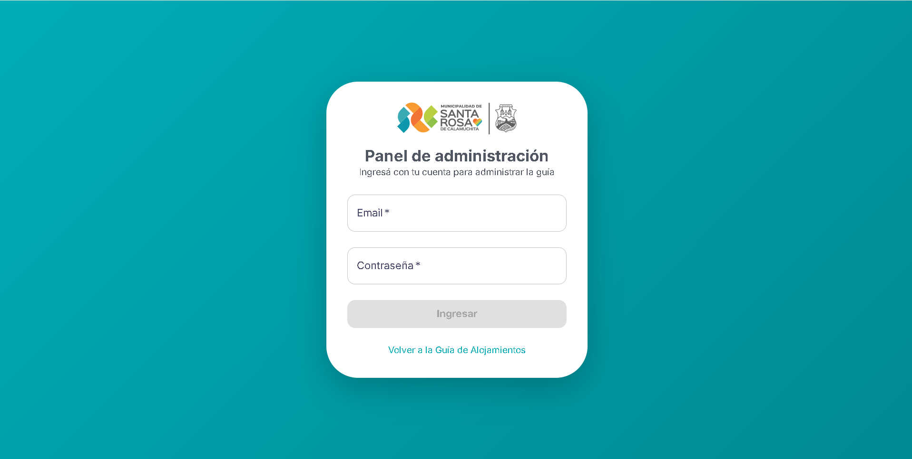
Pantalla de login del panel de administración, con autenticación
segura mediante email y contraseña antes de acceder a la gestión de
contenidos.
admin-panel.alojamientos-src.netlify.app/admin
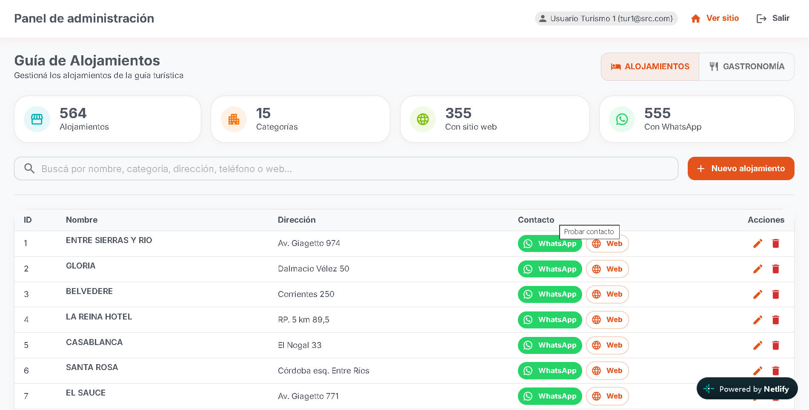
Panel de administración: listado completo de alojamientos con
búsqueda, paginación y acciones de edición y eliminación.
Formulario de edición de un establecimiento, con campos para nombre,
categoría, dirección, sitio web, teléfonos múltiples y otras
opciones de carga de datos.
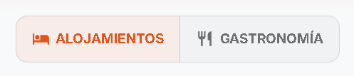
Selector de rubro en el panel de administración, permitiendo
alternar entre la gestión de Alojamientos y Gastronomía según el
contenido a actualizar.
Beneficios para el Municipio
Costo $0 para el municipio
Material moderno y listo para la FIT
Autonomía del área de turismo para actualizar contenido
Escalable a futuro (se pueden agregar más rubros: eventos, servicios,
etc.)
Mejora de la presencia digital del municipio
Próximos Pasos (Sugerencias)
Cargar los datos reales de gastronomía (actualmente en proceso por
parte del personal de turismo)
Capacitar al personal de turismo en el uso del panel de administración
Evaluar la incorporación de nuevos rubros a futuro (eventos,
servicios, etc.)